“Titan Wordpress Template” Documentation by “Peerapong Pulpipatnan”
“Titan Wordpress Version”
Created: 27/06/2013
By: Peerapong Pulpipatnan
Thank you for purchasing my theme. If you have any questions that are beyond the scope of this help file, please feel free to ask your question at the support site at http://support.themegoods.com/. Thanks so much!
Table of Contents
- Getting Started
- Installation
- Setting up header
- Setting up footer
- Setting up image gallery
- Setting up portfolio
- Setting up Elements Colors, Font and Skin
- Setting up page background image and slideshow
- Setting up blog
- Setting up contact
- Available Shortcodes
- Setting up widgets
- Setting up page sidebar
- Theme Translation
- Enable/disable background image cropping for fullscreen template
- Enable/disable image title
- Helper plugin to enable manual cropping
- Using Twitter Widget
- Setting up Woocommerce
A) Getting Started - top
In order to begin installing Titan theme. You need the latest version of Wordpress. Here is the download URL. Once you downloaded and set it up, You are ready to go.
B) Installation - top
Upon downloading the package, you will have an "Titan" folder inside the theme package. Upload this folder to your themes folder at: your WordPress installation root directory /wp-content/themes
Log into WordPress administration and click on the Appearance > Themes tab. After that is done, activate the theme as you would activate any other theme.
Notice: if you are new to WordPress and have problems installing it you might want to check out this link: Solving broken theme issues. After that is done activate the theme as you would activate any other theme at Appearance > Themes. Titan is now the active theme and you will be sent to the Themes Option Panel immediately.
If you are new to WordPress and have problems with setting up the theme you might want to import the dummy content file (Titan_sample_content.xml) that comes with the theme. You can import this file by clicking Tools > Import > Wordpress. The theme will then import some dummy posts and pages from the live preview. However you will still need to set some options on your own ex. main menu and theme settings.
B 1) Setup header - top
B 1.1) Setup Logo - top
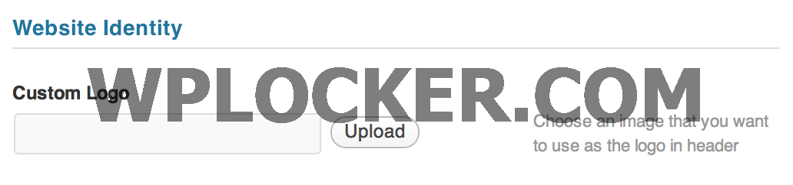 Open Theme Setting > General > Logo then click upload button and save changes.
B 1.2) Setup Main Menu and Top Menu - top
Open Appearance > Menus then click "Create Menu" name it "Main Menu". Add items to your menu items and select menu location.
For those who are not familiar with Wordpress 3.0 menu below are some tutorials.
- http://templatic.com/news/wordpress-3-0-menu-management
- http://www.wonderhowto.com/how-to-use-new-menu-system-wordpress-3-0-thelonious-376792/
If you want to change options of the Theme open the “Theme Setting” (located in your admin sidebar) and click it, you will notice several tabs with options.
B 1.3) Setup Font - top
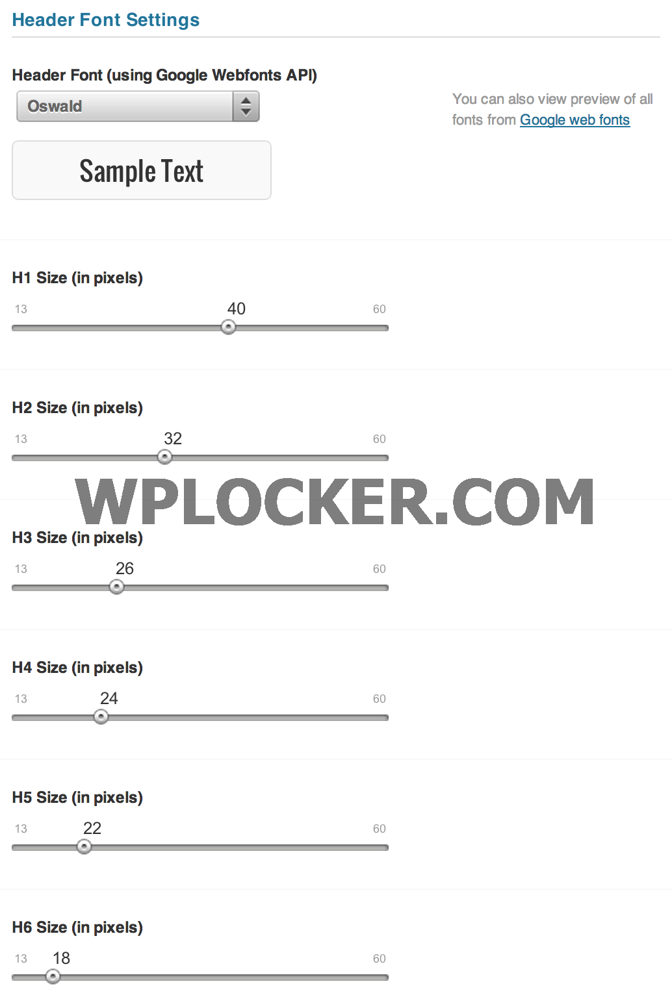 You can setup custom font from Google Webfont. Open Theme Setting > Font and select the font from "Header Font". The default font use on demo site is Oswald (Select disable Google Web Font in Theme admin page). You can also setup all header tags font size, menu and sub menu font size too.
B 2) Setup footer - top
B 2.1) Setup copyright text - top
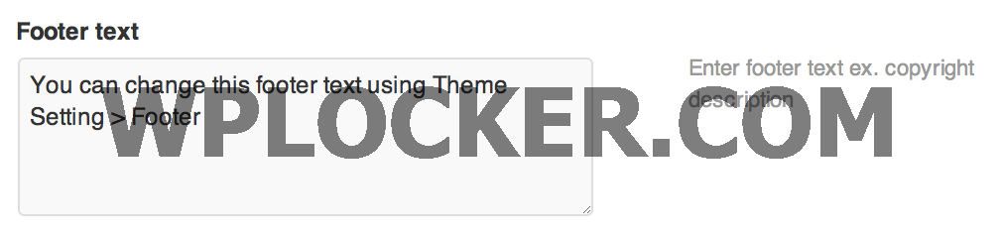 Open Theme Setting > Footer > Footer text then enter your copyright text to textarea.
B 2.2) Setup social media profiles - top
You can setup social media profiles which display on page footer. From your admin sidebar, open Titan Admin Panel > Social-Profiles. Add your social profiles to enable them.
B 2.3) Setup footer widgets - top
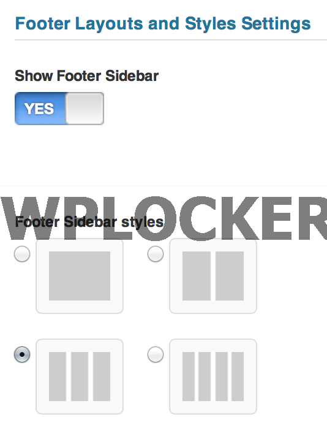 You can setup widgets to "Footer Sidebar". Open Theme Setting > Footer and enable "Show Footer Sidebar". You can also select sidebar columns from 1, 2, 3 and 4 columns. Then open Appearance > Widgets and drag widget from the left side to "Footer Sidebar".
B 3) Setting up image gallery - top
B 3.1) Setup gallery page - top
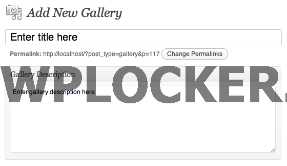
First you have to create a gallery. From your admin sidebar, open Galleries > Add New. You will get add new gallery form. Enter gallery title and description then click "Publish".
Now you have 1 empty gallery. Next you have to add images to this gallery. From gallery admin page. Click on "Add New" next to "Gallery Images" text.
Then select images you want to upload to this gallery. Once you finish upload each image. It will automatically attach to this gallery. You can also change image title and description from this page. If you want to change order of images within gallery. You can easily drag&drop image next to each one. Once you finish dragging, click "Update" to save changes.
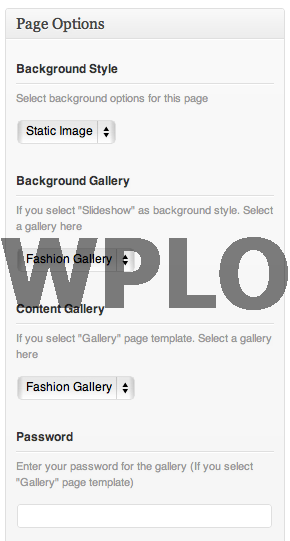
OK now you have a image gallery. Next step is to add gallery page. Titan has 14 predefined gallery templates. From your admin sidebar, open Pages > Add New. You will get add new page form. Enter page title and description.
Next look at "Page Options" box. On gallery... templates, you can select "Static image" or "Slideshow" as page background. If you select "Slideshow" then you have to select "Background Gallery" for it. But if you choose "Static image", you have to upload "set featured image" for its background.
Then you have to select "Content Gallery". This is the main images contents display on page and every gallery templates have to had this option selected.
You can also add "Password Protected" for this individual gallery page. Just enter your gallery password and when visitor view your page, they will need to enter password, you have entered here. This is option is best for displaying image gallery for certain customers :)
Next look at Page Attributes" box. Titan has 14 predefined gallery templates and you can select one for this page :)
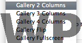
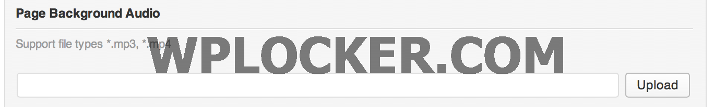
Next look at Page Options" box. You can upload .mp3 music to the gallery and it will play automatically on your gallery page.
Gallery Images Sorting Options
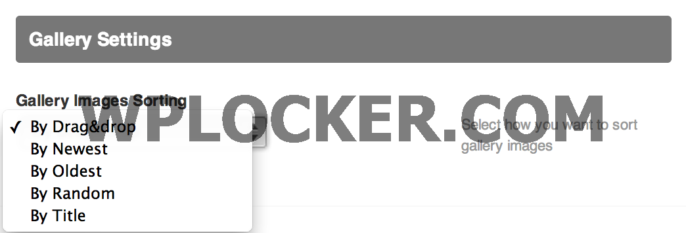 By default you can drag&drop to order images using gallery admin. However if you have many images in the gallery. It's not easy to change image order using drag&drop. So you can overwrite image order using Theme Setting. Open Theme Setting > Gallery Portfolio > Gallery Images Sorting and select sorting option you want to use.
B 3.2) Setup fullscreen Youtube and Vimeo background page - top
Fullscreen Youtube Video Page
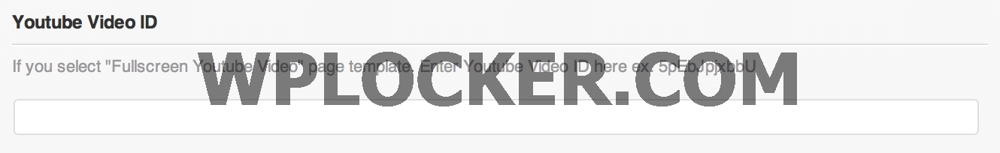
From your admin sidebar, open Pages > Add New. You will get add new page form. Enter page title and description.
Next look at "Page Options" box. Enter your "Youtube Video ID" and select "Page Template" as "Fullscreen Youtube Video".
Fullscreen Vimeo Video Page
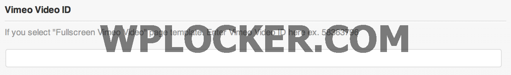
From your admin sidebar, open Pages > Add New. You will get add new page form. Enter page title and description.
Next look at "Page Options" box. Enter your "Vimeo Video ID" and select "Page Template" as "Fullscreen Vimeo Video".
B 3.3) Setup homepage gallery, header and music - top
 Open Titan admin > Homepage and Select homepage gallery. You can also change homepage gallery style there.
Open Titan admin > Homepage and Select homepage gallery. You can also change homepage gallery style there.
Next you can insert music to your homepage gallery. Simply upload .mp3 file and click "Insert to post" button.
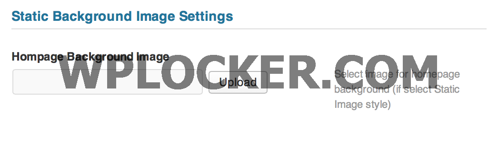 If you select "static image" as homepage style then you can upload background image in "Static Background Image Settings".
B 3.4) Setup homepage as static page - top
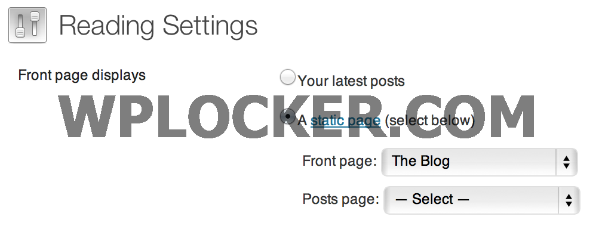 You can also setup homepage content as static page (instead of image gallery). From your admin sidebar, open Settings > Reading> Front page displays then select "static page".
B 3.5) Setup gallery of galleries page - top
Titan also has built-in "Gallery of Galleries" page which displays all galleries that you have. From your admin sidebar, open Pages > Add New. You will get add new page form. Enter page title and description.
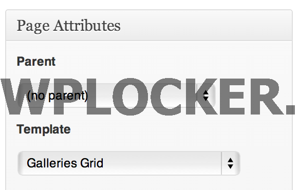 Next look at Page Attributes" box. Select page template as "Galleries Grid".
B 4) Setting up portfolio - top
B 4.1) Setting up portfolio item - top
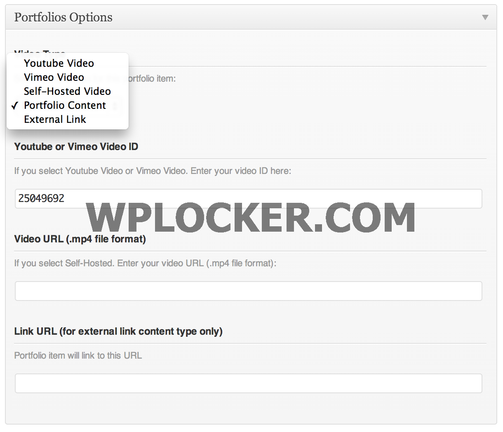
First you have to create a portfolio item. From your admin sidebar, open Portfolios > Add New Portfolio. You will get add new portfolio form. Enter portfolio title and description.
Next look at "Portfolios Options" box. Select content type from "Youtube Video", "Vimeo Video", "Self-Hosted Video", "Portfolio Content" or "External Link".
- If you select "Vimeo" or "Youtube" video type, you have to enter video ID ex. "cdygEzfbhqc" for Youtube and "27299211" for Vimeo.
- If you select "Self-Hosted Video" type, you have to enter your video URL (.mp4 or .flv file format).
- If you select "Portfolio Content", you can add HTML or text to portfolio content. So when visitor click on this portfolio, they will be redirected to portfolio single page with its content.
- If you select "External Link", you have to enter "External Link URL". So when visitor click on this portfolio, they will be redirected to this URL.
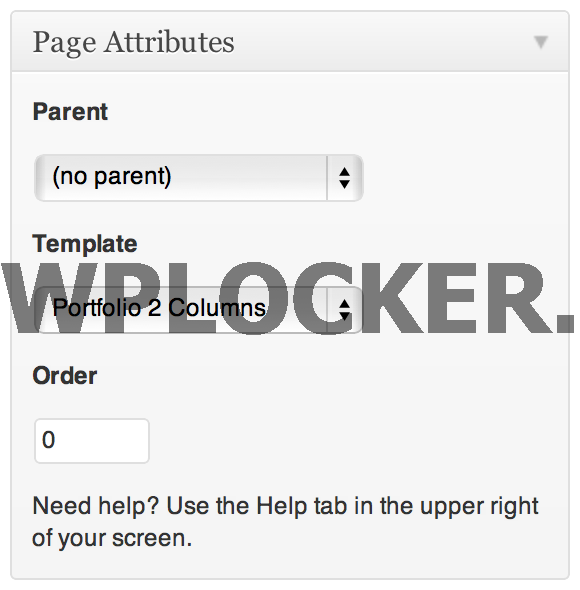
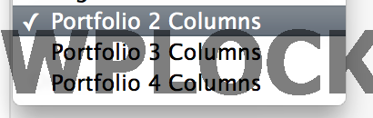
OK now you have a portfolio item. Next step is to add portfolio page. From your admin sidebar, open Pages > Add New. You will get add new page form. Enter page title and description.
Next look at Page Attributes" box. Select "Portfolio…" related templates (there are 3 portfolio templates available) for page template and click on "Publish" :)
Next you can re order portfolio items. From your admin sidebar, open Portfolios > Re-Order and you can drag&drop to re order them. Once you finish, click on "Update".
Next you can re order portfolio items using "Post Type Order" plugin. You can download the plugin for free here
Organise Portfolio by Set
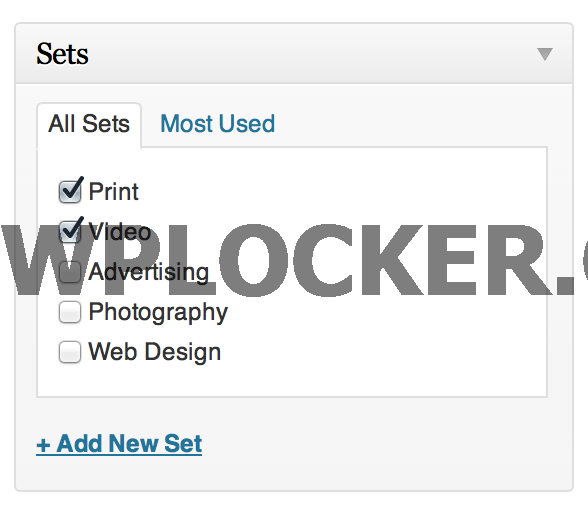 You can organise portfolio items in to set (portfolio categories). To use portfolio sets. Once you assign portfolio to set. Go to Appearance > Menus. Then select which set you want to add to your menu items. If you can't see it, click on screen option (top right) and check on sets
B 4.2) Setting up portfolio single page - top
If you select "Portfolio Content", you can add HTML or text to portfolio content. So when visitor click on this portfolio, they will be redirected to portfolio single page with its content. On demo site we added vimeo embed code with 960px width setting so it displays vimeo video at the top of portfolio single page.
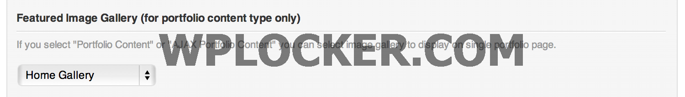
You can also setup horizontal image gallery at the top of portfolio single page. Look at "Portfolio Options" box, select "Featured Image Gallery".
*Note: You have to create some image gallery first. See How to create image gallery
B 5) Setting up Elements Colors, Font and Skin - top
You can customize your site elements's colors, background, fonts and other settings. Then on the top right of Theme Setting, there is "Save as Skin" button. So once you finish customizing, you can easily save current setting as skin so later you can easily switch back to this setting.
B 6) Setting up page background image and slideshow - top
B 6.1) Setting up a background image to Archive, Category, Search, Tag pages - top
Open Titan admin > Archive, Category, Search, Tag pages Background Image and Select image for blog background (Recommended size 1440x900 pixels)
B 6.2) Setting up a background image to a page - top
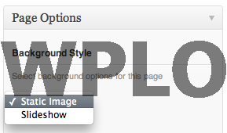
From your admin sidebar, open Pages > Add New. You will get add new page form. Enter page title and description.
Next look at "Page Options" box. Select "Static image" as page background then you have to upload "set featured image" for its background. Click on "Set featured image" to upload preview image for this post. Once uploaded click "Use as featured image".
B 6.3) Setting up a background slideshow to a page - top
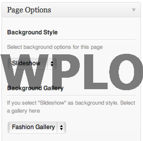
From your admin sidebar, open Pages > Add New. You will get add new page form. Enter page title and description.
Next look at "Page Options" box. Select "Slideshow" as page background as page background then you have to select "Background Gallery" for its background.
B 6.4) Change theme default background image - top
You can replace theme's default background image by replacing "bg.jpg" in /example folder of the theme.
B 6.5) Setting up music for page - top
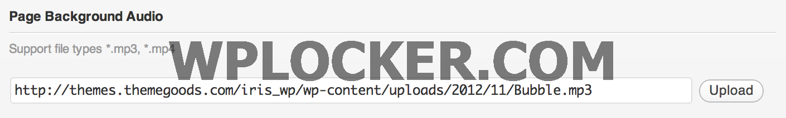
From your admin sidebar, open Pages > Add New. You will get add new page form. Enter page title and description.
Next look at "Page Options" box. There is a "Page Background Audio" option. You can upload .mp3 file and click "Insert to post" button to attach music to the page.
B 7) Setting up blog - top
 First, you have to create some blog post which is basic stuff. You can find many tutorials from Google :) (or just play around with posts on your admin dashboard). Next step, I will guide you how to create a blog page to display these posts.
First, you have to create some blog post which is basic stuff. You can find many tutorials from Google :) (or just play around with posts on your admin dashboard). Next step, I will guide you how to create a blog page to display these posts.
From your admin sidebar, open Pages > Add New. You will get add new page form. Enter page title and description.
Next look at Page Attributes" box. Select "Blog.." for page template and click on "Publish" :)
You can choose from "Blog Grid", "Blog With Sidebar" or "Blog Fullwidth" templates and you can also select "Single Post Page" layout, simply open Theme Setting > Blog > Single Post Page Layout.
B 8) Setting up contact - top
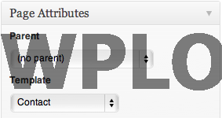
First, you have to setup your email address. Open Titan Admin Panel > General and setup your email address.
From your admin sidebar, open Pages > Add New. You will get add new page form. Enter page title and description.
Next look at Page Attributes" box. Select "Contact" for page template and click on "Publish" :)
You can add Google Map to contact page content using map shortcode. Here is sample map shortcode use in demo site. Change to your location's latitude and longitude values
[map width="590" height="350" lat="52.372979" long="4.895267" zoom="15"]
B 13) Available Shortcodes - top
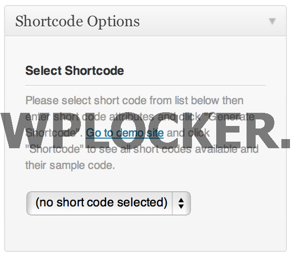
Titan has many built-in custom shortcodes. You can see full lists of them and get sample code from Titan demo site. You can also use shortcode generator to generate sample code of theme shortcodes.
B 10) Setting up widgets - top
However the homepage sidebar is support all Wordpress 3.0 widgets. I created 8 custom widgets to make your website more interesting.
You can also add your sidebar via Admin panel.
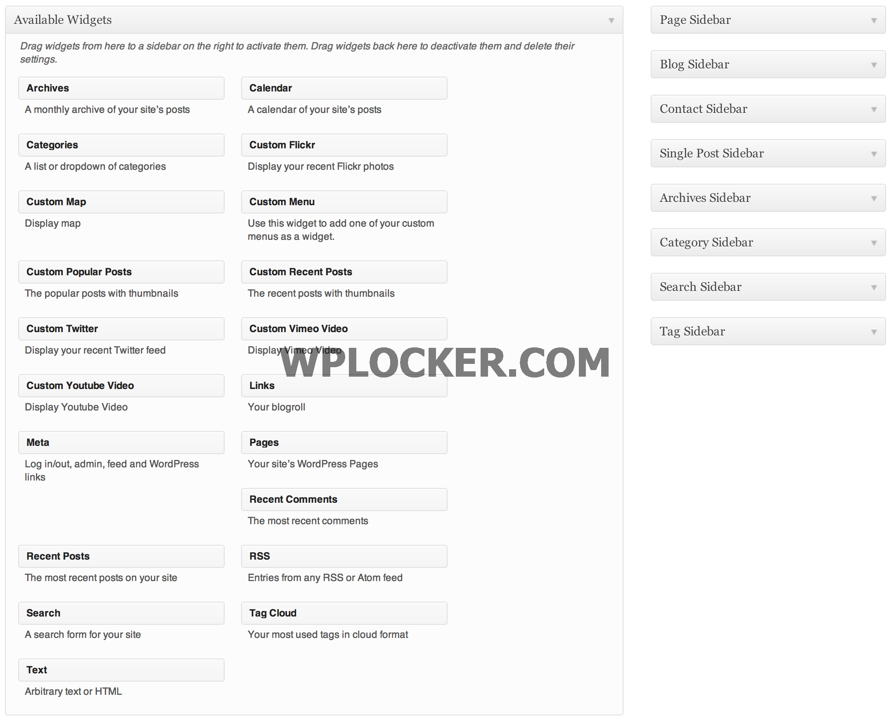 To add content to sidebar simple go to Appearance > Widgets and drag item into certain sidebar.
B 11) Setting up page sidebar - top
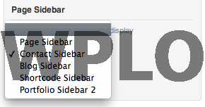 When you create a page. There is an options to Select Sidebar" and select page template as "Page with Sidebar"
B 12) Theme Translation - top
You need an application name "PoEdit" and you can download it for FREE here http://www.poedit.net/.
Once you download and install it. Open file /languages/en_US.po with PoEdit then translate it to yours. You will need to upload all files in /languages folder to your server once you finished translate.
B 13) Enable/disable background image cropping for fullscreen template - top
If you selected background slideshow on page. It will automatically adjust your image size (cropped or resized) to works perfectly with visitor screen resolutions. However you might not want to crop your images. You can disable it. From your admin sidebar, open Titan admin > Homepage > Enable/disable auto fit image to screen for homepage slideshow and Titan admin > Gallery Portfolio > Enable/disable auto fit image to screen for other pages.
B 14) Enable/disable image title - top
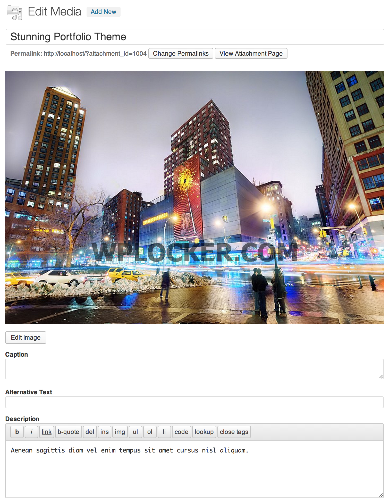
You can enable image title to display small description text of your photos. From your admin sidebar, open Galleries and click on gallery you want to change its image title. Click on image and you will see "Edit Media" form. Enter image title and click "Update Media".
Once you finish editing images title. You can enable or disable it via Titan admin. From your admin sidebar, open Titan admin > Gallery Portfolio > Enable/disable image title and description for other gallery pages.
B 15) Helper plugin to enable manual cropping - top
You have images which are cropped to fit with gallery images size and sometimes cropping might cur important part of image which you want to avoid. You can use this plugin to enable manual cropping.
B 16) Using Twitter Widget - top
Please visit http://support.themegoods.com/?knowledgebase=fix-twitter-widget and follow the instruction there.
B 17) Setting up Woocommerce - top
B 17.1) Plugin Installation - top
You can integrate online shopping features by using one of the most popular shop Wordpress plugin "Woocommerce". In order to use it, you can download Woocommerce plugin for free from Woothemes.. Then follow below steps to install Woocommerce.
- Log into your WordPress Admin area.
- Look down the left hand column for “Plugins” and then click on the word “Plugins”.
- Just to the right of the title “(Manage) Plugins” in the image above, you can see a button marked “Add New”, click this button.
- The image above shows the option to upload the plugin from your own PC, Select the woocommerce.zip you had previously downloaded from Woothemes. Install the zip and click on "Activate Plugin".
Then please find full documentation of "Woocommerce" plugin here
B 17.2) Setup shop pages's background image - top
You can upload shop pages background image. Open Theme Setting > Shop and click "upload" button. When you finish uploading your background image. Click on “File URL” button and then click on “Insert to post” button.
Once again, thank you so much for purchasing this theme. As I said at the beginning, I'd be glad to help you if you have any questions relating to this theme. No guarantees, but I'll do my best to assist. If you have a more general question relating to the themes on ThemeForest, you might consider visiting the forums and asking your question in the "Item Discussion" section.
Peerapong Pulpipatnan